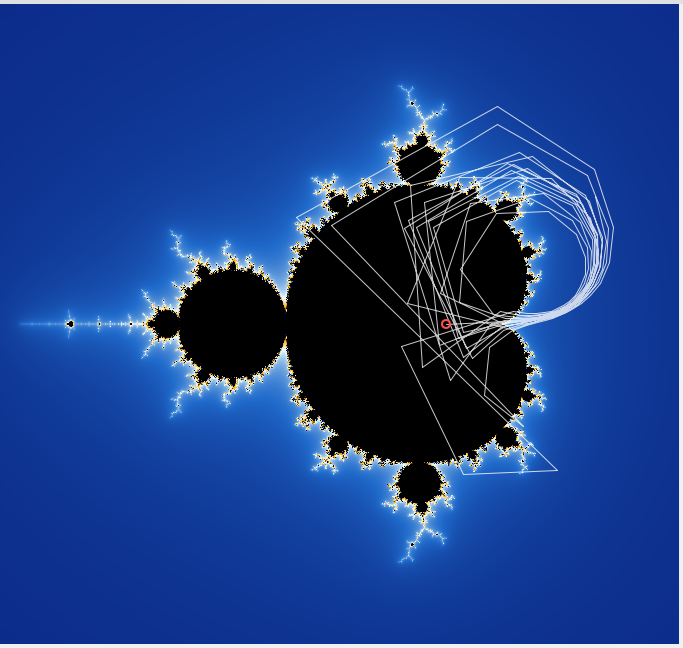
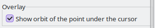

Tick Show orbit of the point under the cursor in the Overlay section, or View > Show orbit under cursor (Ctrl+O), and the path of the point under the pointer is drawn as it is iterated: a red circle marks where the point starts and a white line follows where the formula sends it, for up to 512 steps.

Points inside the set stay trapped, circling or settling; points outside fly off the screen after a few steps. Near the edge the orbits wander for a long time first, which is what produces the fine structure there. The overlay hides while you drag and when the mouse leaves the picture, and it works at any zoom, including deep views, where the orbit is computed exactly from the pointer's position.
Try it: turn the overlay on, then move the mouse across the edge of the set. Try it: turn it off